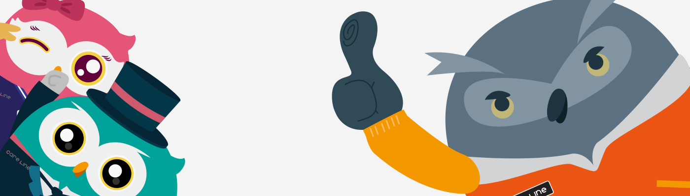
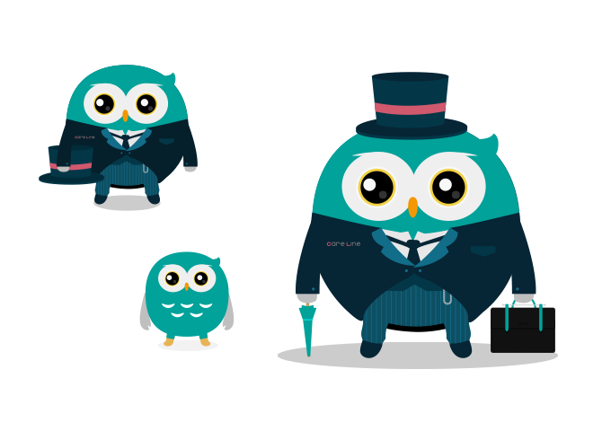
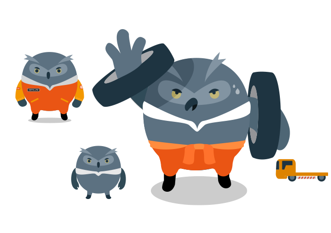
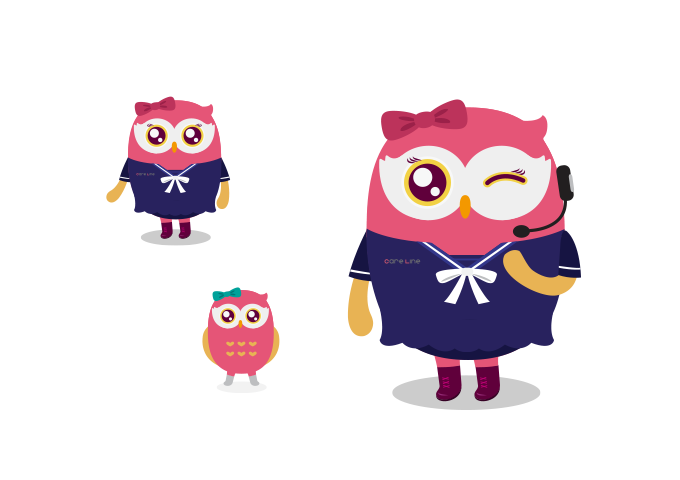

凱
性別：男性
年紀：28歲
星座：處女座
性格：喜愛幫助別人、細心、能力很強，談吐詼諧幽默，小時候曾在英國寄宿學校求學，個性上養成一絲不苟的做事風格，缺點是愛跟人講道理，特別怕熱。在三兄妹中屬於對外的領導類型角色。
興趣：料理研究(對於餐具的挑選也很有心得)、逛唱片行、旅行、流行時尚的事物，最崇拜的偶像是大衛鮑伊(知名已故英國搖滾歌手)。
喜愛的食物：炸魚薯條、奶油培根口味的義大利麵、不加糖的紅茶。
討厭：慢慢吞吞、髒亂的環境、不守時、杏仁味。

壯壯
性別：男性
年紀：26歲
星座：獅子座
性格：愛結交朋友、人緣很好，做事情喜歡馬上跳到第一線去，很有責任心、正義感很強，缺點是無法安靜下來，對此讓凱時常感到很頭疼。
興趣：電玩遊戲、重型機車、露營、體育競賽(最喜歡的球隊是隸屬於倫敦的職業足球俱樂部Arsenal)。
喜愛的食物：英式烤牛肉、拉麵、可樂(據說每天要喝三罐以上)。
討厭：嚕嗦的人、不負責任、麵包上的芝麻、連續兩日以上的下雨天。

安安
性別：女性
年紀：22歲
星座：雙魚座
性格：活潑、善解人意、愛照顧人，缺點是有輕微的潔癖，且太容易相信別人，很喜歡凱跟壯壯兩個哥哥，時常黏在他們倆身旁。
興趣：電影、逛街購物、塔羅牌、烘培(最拿手的是司康餅，一種英式下午茶小點)、流行時尚的話題。
喜愛的食物：麻婆豆腐(安安特別愛吃辣的食物)、壽司、熱的鮮奶茶。
討厭：曬黑、肉桂、對兩個哥哥不好的人、黃昏(她自己解釋是因為會讓人感到孤單)。